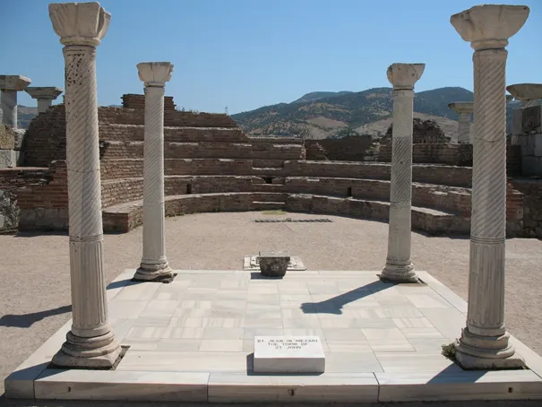
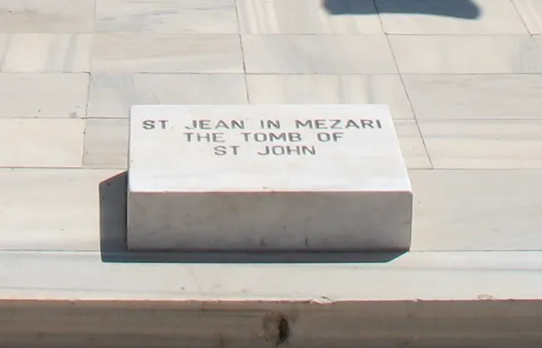

Apokalipsa
Apokalipsa nie oznacza, jak często nam się wydaje, żadnego zakończenia, ale odsłonięcie, zdjęcie zasłony, pokazanie jak jest naprawdę, początek życia w realu na 100%, wszystko przed Apokalipsą to pozór i niedoskonały obraz prawdziwego..
Najbardziej znaną jest Apokalipsa św. Jana Ewangelisty. Ten młodziutki uczeń dostał nie lada misję od konającego Jezusa, zaopiekować się Matką Mistrza. Uciekając przed prześladowaniami wielu pierwszych chrześcijan osiadło w Efezie, mieście cieszącym się wolnością wyznania, osiedli tam i Oni. Trafiłem do tego miejsca wiele lat temu i wracam, gdy tylko mogę. Poza Domem Maryi jest tu też grób św. Jana Ewangelisty. Ten, jako jedyny z Apostołów zmarł śmiercią naturalną ok. 100 roku, pozostali zmarli śmiercią męczeńską.

Stojąc nad jego grobem widzimy wiekowe kamienie i ślady dawnej świetności starożytnego chrześcijaństwa, znamienne to bardzo. Od blisko 1000 lat to teren islamu, ale dopiero 100 lat temu wysiedlono stąd greckich chrześcijan, którzy nocą, z pochodniami szli w procesji do Domu Maryi, aby uczcić jej Wniebowzięcie. Wspomnienie tych precesji w starszych pokoleniach słyszałem osobiście od miejscowych chrześcijan. Obecnie to święto obchodzimy 15 sierpnia.

Przekaz św. Jana jest najbardziej skondensowaną nauką, jaką znajdziemy w Ewangeliach. U Jana czytamy o początku i końcu wszystkiego, też o początku nowego świata, Alfa i Omega, początek i koniec. To u Jana czytamy: „Na początku było Słowo.”
Żyjemy w czasie, gdy wielu widzi wokół zapowiedź końca, lektura Apokalipsy nie jest łatwa, ale też nie powinna przerażać, pozwala oddzielać w naszym życiu rzeczy ważne, od błahych.
Oczywiście dziś to miejsce jest w Turcji, kilka dni temu miałem okazję chwilę nad nim przystanąć.
Paweł Klimczewski